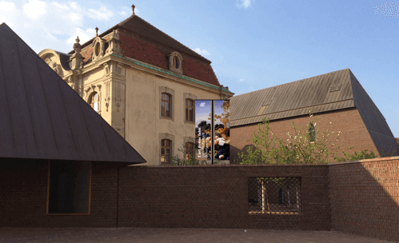
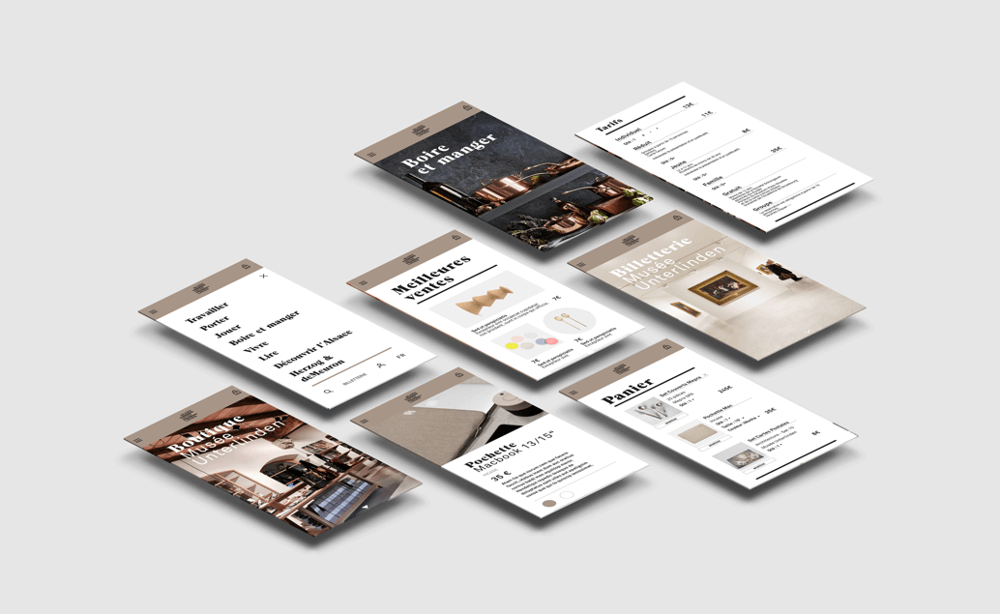

Webdesign
UI/UX
Corporate Design
The new Musée Unterlinden designed by Herzog & de Meuron contribute significantly to the attractiveness of Colmar. The French town is located in the heart of Alsace, close to Germany and Switzerland; It attracts 3 million visitors annually from Europe, North America and Asia.
NEW ID has developed and designed brand design and communication for the new museum.

